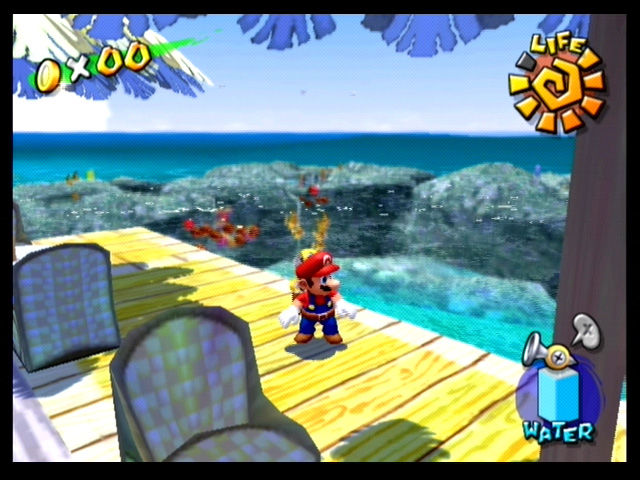

Heya! I've been playing video games since I was little, and its gotta be my favorite hobby
by far. Over time I've played lots of games, some good, some bad, so I decided to put together a list
of a few worth mentioning, which you can read below! There's also some
interactive javascript components I added right above all the summaries, which you can mess around with. I also go more into detail about the design of some games
in the links on the right (or below on mobile)
Interactive JS
Font Size
Fade In/Fade Out
Sound
All buttons have sound added via the soundJS library. Click below to test.Super Mario Sunshine

While on vacation, Mario is framed for a crime he didn't commit! His punishment? He has to clean the entire island! Sounds like
a chore, but this game is actually loads of fun! Mario's equipped with a water-powered jetpack/super-hose
and has to spray down goopie enemies and clean graffiti, all the while doing classic Mario platforming challenges.
This game isn't perfect, and can be clunky at times, but it holds a very special place in my heart.
Some of this game's biggest flaws come from the fact that it was rushed in development. You can tell by how they
just sort of crammed a lot of meaningless shines in to increase the shine count. You get so many of the shines just
by collecting blue coins scattered randomly throughhout the level... it's certainly filler. There's also just occasions where
you'll glitch out through the floor or something similar, but these are kind of rare luckily. Some people think the game's platforming
is made too easy because of the hover nozzle, and I can certainly see this argument. However, it's just so fun to fly around with that thing...
This game has some of the best controls in a platformer, no doubt!
Myst
Myst is a game from 1993 which I just happened upon recently. It's far from a traditional game,
demonstrated by its lack of cutscenes and action sequences. Instead, you traverse a mysterious world,
yearning to learn more about where, and when, you are. The graphics look dated by today's standards, but they
were actually pretty revolutionary at the time, when games like DOOM were just starting to take hold. These graphical
feats were accomplished using pre-rendered graphics, packed on to at-the-time-brand-new CD-ROM technology. Dive into this
mysterious world and learn more!
To be honest though, I had to cheat to beat this game. There's some hidden doors that are pretty much impossible to notice. Maybe if I'd spent
hours upon hours going back and forth in the rooms, but I didn't want to waste my time. Othher than thhese few, however, most of the puzzles
are fairly reasonable, interesting, and tie in seamlessly to the world around you. Often games will pull you out of the game for some sort of
minigame as a puzzle, but in Myst thhe puzzles take place in the world around you, and they're always a little bit different. It really
makes you feel like an adventurer, and its fantastic!
Portal 2
Portal 2 was the first game I bought that used Steam, so it was not only an amazing game, but also lead me to
discover the vast world of PC gaming! I remember fondly my family computer chugging along, trying its hardest to render
the game, fans blaring, while I was just satisfied to play on the lowest settings at about 15 frames per second. It didn't really matter
to me I suppose, because the game was designed so well and the world so intriguing that I could put up with it. This game is full
of excellent puzzles, a hilarious cast, and a great ending song.
Portal 2 rides in on the legacy of the wildly successful Portal 1, both introducing the Puzzle genre to the first person perspective. Some people
may be nauseated by this unique combination and Portal's mechanics, but if you're not you are in for a great experience. Puzzling in 3d offers
all sorts of unique affordances which you can't get from 2D puzzles, and as such can't get in most real world puzzles. This is also a great game to
speedrun, and I actually personally was learning the route to do so, until I lost the patience required.
Super Mario RPG
Yup, another Mario game!
This game went on to shape future mario RPGs, such as Paper Mario and the Mario and Luigi series, but
it is also great on its own. You get to control several classic Mario characters, as well as a few
strange but lovable newcomers. This game captures Mario's style perfectly, while also creating
a completely unique experience. Another game filled with humor, although this game is definitely a wackier than Portal 2.
This game definitely holds up today!
One reason this RPG is so engaging is that many of your special moves require timed button presses, bringing in an action element. Often, turn based fights can become
super monotonous, and grinding them out a chore. However, this touch of action helps to alleviate some gamer fatigue.
Counter-Strike: Global Offensive

I kind of hate this game. Don't get me wrong, it does what it does perfectly; it's a great competitive
shooter with a very high skill ceiling, and watching the pros play is nothing but awe-inspiring. I was
even lucky enough to get to see a couple tournaments live, and the energy in the arena was absolutely thrilling.
And on top of that, I used to love to play it! But this game has been such a source of frustration and a
destroyer of friendships that I can definitely NOT recommend it. It's also a huge time-waster. If I'd put half
time I put into this game into art, I'd be Michaelangelo by now.
Interestingly, this game has a huge gambling scene, and the game's in game loot crates can themselves be seen as a form of gambling.
Many parents are against introducing these kinds of game systems to children, but games companies insist this in game market is no form of gambling. However, that which goes on outside
of the game, is undeniably gambling. Valve has taken some measures to shut down gambling sites in the past, but the sites are too numerous, and there isn't much they can do at this point.
This site was created by Maya Bello, as a part of NYU's Intro to Web Design course.